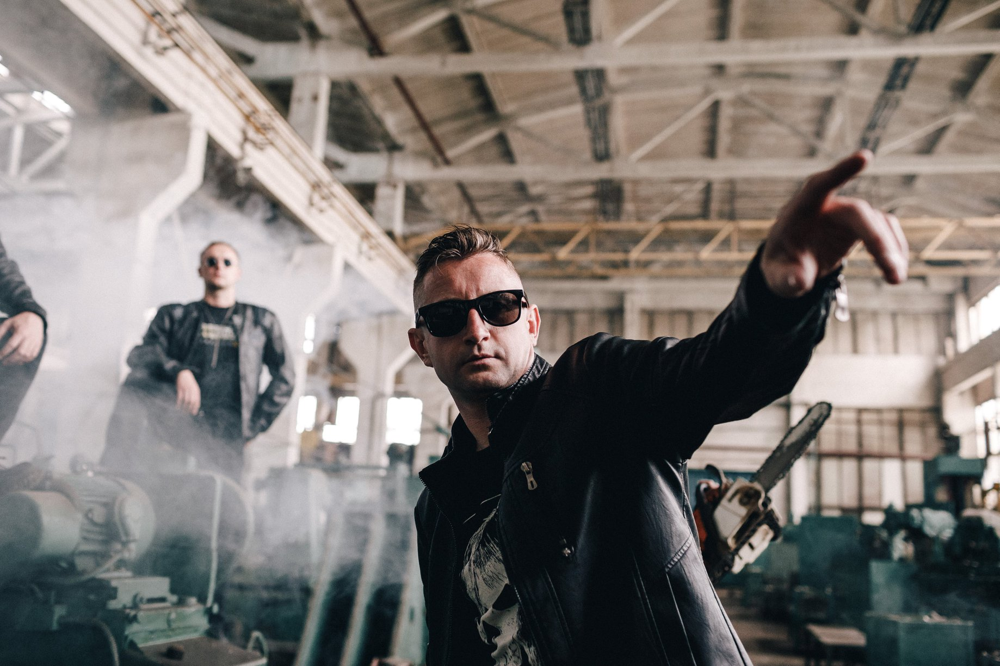

Ти - панк Жадан
Час працює на тебе, він тебе убиває. Ти мотаєшся потягами від міста до міста, куриш дешеві цигарки та запиваєш пальонкою, придбаною на десь на станції. Твоя епоха - дев'яності. Ти ще не знаєш, як змінишся через десять років.
Я знаю, Боже, що таке дно!
Всім давно усе все одно!
Всі давно чекають кінця!
До тебе тут ставляться, як до мерця!
Тому просто знищуй, просто пали
Церковні мури, темні вали!
Життя одне, ніяк не мине,
Знищуй мене! Давай, знищуй мене!
